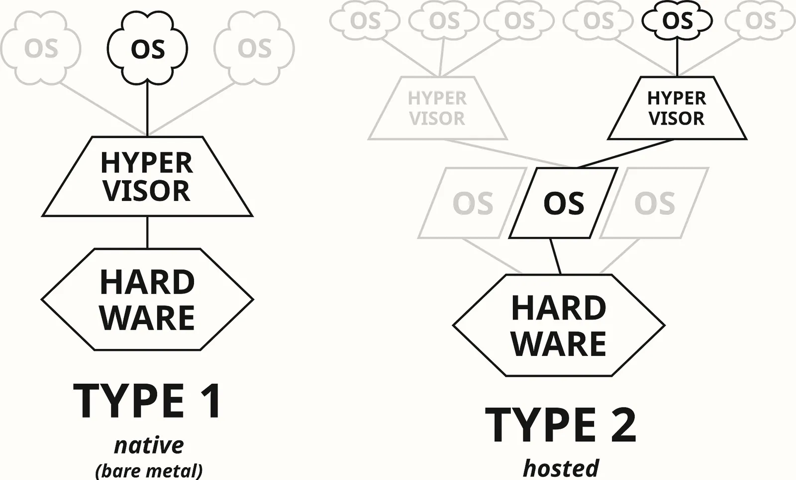
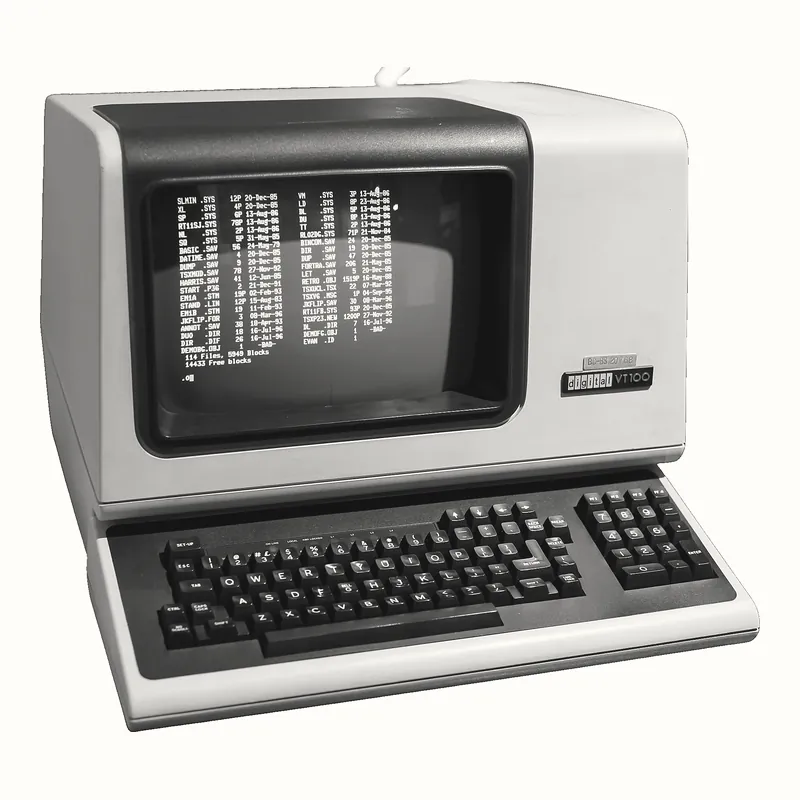
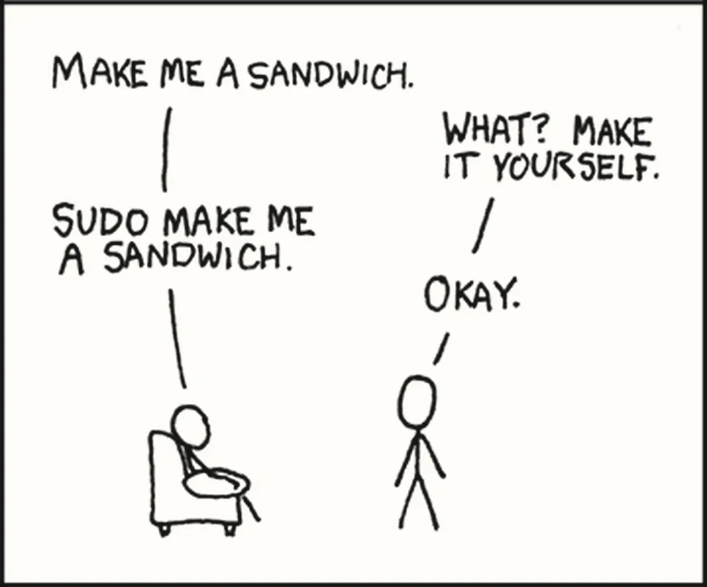
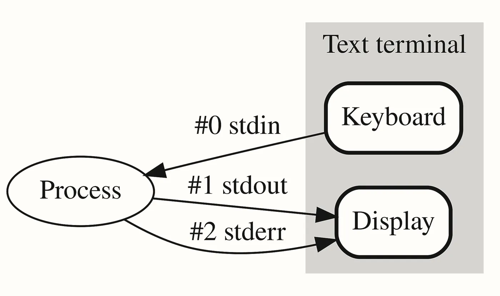
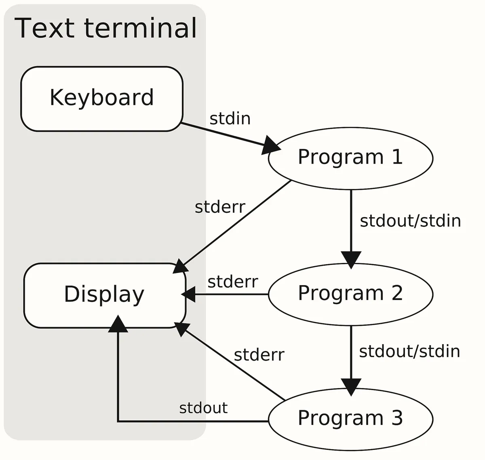
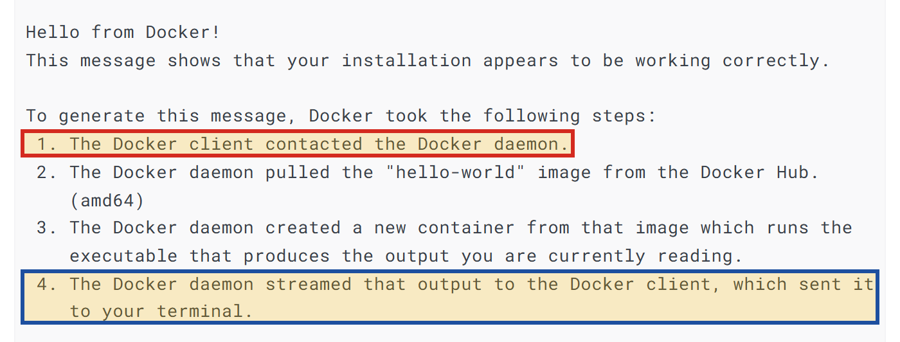
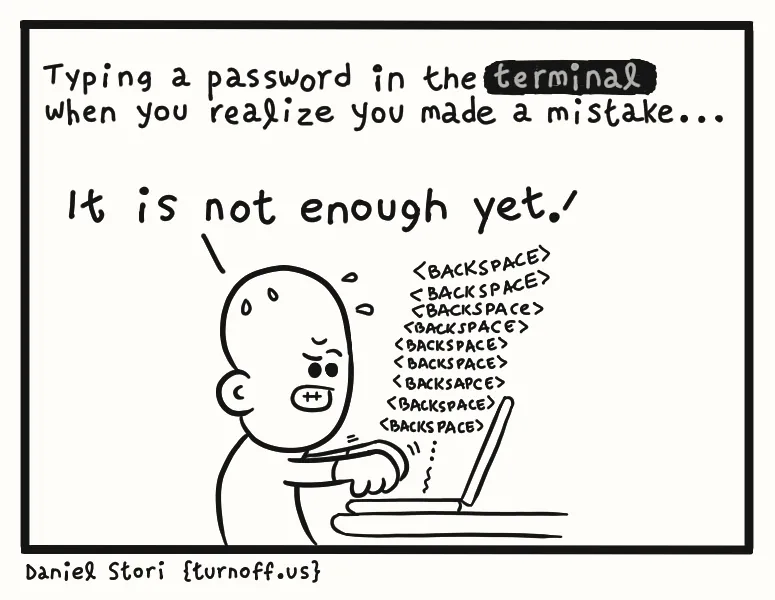
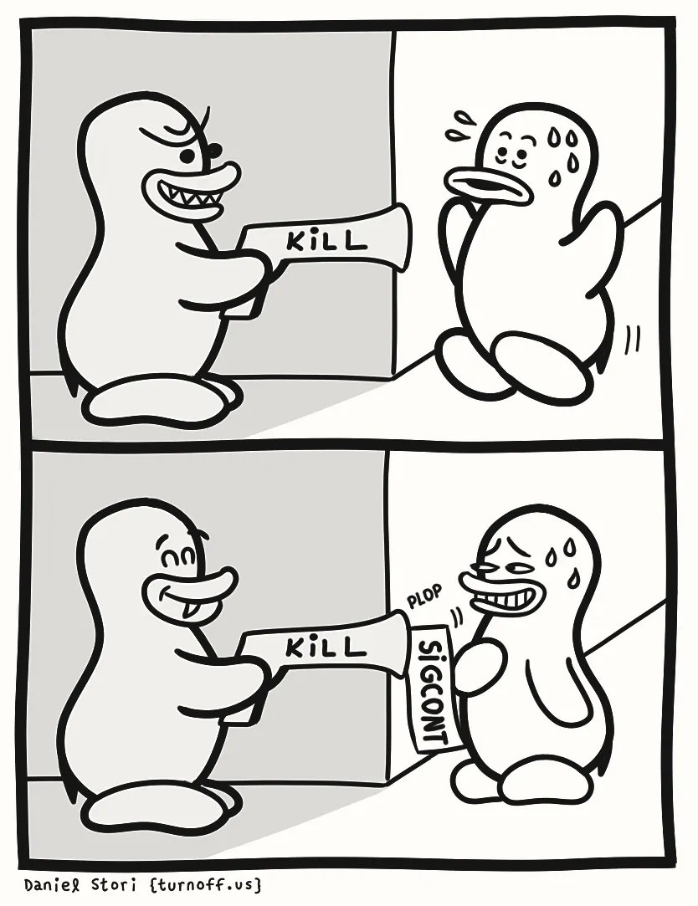

Bài 03 kết thúc ở một câu hỏi: Server thật chạy Linux, còn mọi lab tới giờ chạy trên Windows. Làm sao có một máy Linux thật ngay trên máy mình, để thấy process, signal và lỗi đúng như trên server? (xem lại đoạn cuối Bài 03). Câu hỏi đó sinh ra từ những chỗ mà lab của Bài 03 buộc phải dừng ở chữ "tương đương".
Làm xong lab Bài 03 trong Git Bash, đọc kỹ lại thì kết quả nào cũng kèm một điều kiện. Bấm Ctrl+C không
gửi signal nào: Windows phát một sự kiện của cửa sổ dòng lệnh, và Node tự dịch nó thành SIGINT.
taskkill //F chỉ tương đương SIGKILL. Còn lệnh mà Bài 03 dặn dùng để tìm dấu vết của OOM killer
thì không tồn tại:
$ dmesg
bash: dmesg: command not foundNgay cả con số tự đo cũng mang dấu của Windows: gọi một port không ai listen mất 2,155 giây mới nhận được
refused, trong khi Bài 01 nói trên Linux lời từ chối tới gần như tức thì. Mà server bạn sẽ deploy
lên ở Module 2 chạy Linux.
Phần Bài 03 dạy về signal, OOM killer và systemd là lý thuyết đúng, nhưng thứ bạn tận mắt thấy mới là bản mô phỏng. Bảng 1 gom những chỗ đó lại.
| Thứ cần quan sát | Trên Windows, trong Git Bash | Trên một server Linux |
|---|---|---|
| SIGINT khi bấm Ctrl+C | Sự kiện của cửa sổ dòng lệnh, Node tự dịch | Kernel gửi SIGINT tới process |
| SIGTERM, SIGKILL | Không có signal; taskkill //F kết thúc cưỡng bức | kill gửi SIGTERM, kill -9 gửi SIGKILL |
OOM killer, dmesg | Không có | Kernel ghi lại mỗi lần nó giết process |
| systemd ở PID 1 | Không có | Process đầu tiên, trông coi mọi service |
refused ở port không ai listen | Khoảng 2 giây, vì Windows thử lại | Thường vài mili-giây, chưa đo trên máy này |
Dòng cuối dễ kiểm chứng nhất, vì chỉ cần chạy lại đúng một lệnh trên một kernel khác. Hình 1 đặt hai lần đo cạnh nhau; cột phải còn bỏ trống.
Windows · Git Bash Linux · bash
────────────────────────────────── ──────────────────────────────────
$ time curl -4 -o /dev/null \ $ time curl -4 -o /dev/null \
http://127.0.0.1:9999 http://127.0.0.1:9999
curl: (7) Failed to connect … curl: (7) Failed to connect …
after 2076 ms after ? ms
real 0m2.155s real ?Để điền cột phải, cần một kernel Linux trên máy bạn, một cách ra lệnh cho nó, và hiểu output của lệnh đi đâu; Docker, công cụ của Module 1, đứng ngay sau vì nó cũng cần kernel đó. Nên câu hỏi của bài tách ra bốn câu.
- Máy ảo là gì, và WSL2 đặt một kernel Linux thật vào máy mình bằng cách nào?
- Điều khiển máy Linux đó bằng gì: terminal, shell, lệnh, và cách đi lại giữa các thư mục?
- Output và lỗi của một lệnh đi đâu, và các ký hiệu
>,2>/dev/null,|đã gặp ở Bài 00, 01, 03 nghĩa là gì? - Docker Desktop đặt Docker ở đâu trong máy Linux đó, và vì sao lệnh
dockercó thể báo không gọi được daemon?
Cần đã học trước
- Process, PID, process cha và con; những gì process sở hữu (file đang mở, thư mục làm việc, biến môi trường, user); user root. Bài 03, tab Process
- Kernel, user mode, syscall. Bài 03, tab Kernel
- Signal, handler, OOM killer,
dmesg. Bài 03, tab Process chết - Service, daemon, systemd là PID 1. Bài 03, tab Service
refusedvà con số 2,155 giây. Bài 01, tab Kết nối TCP · tab Lab- Lệnh
openssl … 2>/dev/nullđọc chứng chỉ. Bài 00, tab Lab - Nửa phía server của bản đồ: firewall của server, Nginx, ứng dụng, database. Bài 00, tab Phía server
Để có Linux thật trên máy đang chạy Windows, trước hết phải hiểu vì sao hai thứ đó không chạy chung đơn giản được. Đáp án nằm ở hai kết luận của Bài 03: kernel là thành phần duy nhất được chạm phần cứng, và chương trình phải xin kernel làm hộ qua syscall.
Vì sao phải là chính kernel Linux
Mọi dòng ở cột phải của Bảng 1 là việc của kernel Linux: signal do kernel gửi, OOM killer là một phần của
kernel, dmesg đọc thông báo kernel tự ghi. Nên không cài chúng lên Windows như cài thêm một ứng
dụng được. Hơn nữa, chương trình biên dịch cho Linux, như bash hay Docker, nói chuyện với kernel bằng bộ
syscall của Linux, mà kernel Windows không hiểu bộ đó.
Vậy cần một kernel Linux, nhưng Bài 03 còn nói chỉ một kernel nắm phần cứng, và trên máy bạn đó là kernel Windows. Đã có ba cách được thử: biên dịch lại từng chương trình Linux cho Windows (Git Bash ra đời như vậy), dịch từng syscall Linux sang lời gọi của Windows (WSL thế hệ đầu), hoặc chạy hẳn một kernel Linux trong máy ảo. Phụ lục Lịch sử WSL kể vì sao hai cách đầu không đủ; tab này đi vào cách thứ ba, cách của WSL2.
Máy ảo và hypervisor
- Máy ảo virtual machine · VM
- Một máy tính dựng bằng phần mềm bên trên một máy thật, có CPU, RAM, ổ đĩa, card mạng ảo, và chạy một hệ điều hành đầy đủ có kernel riêng, gọi là kernel khách.
- Hypervisor
- Lớp phần mềm nằm dưới mọi kernel, chia phần cứng thật cho các máy ảo và giữ chúng cô lập. Hypervisor của Windows tên là Hyper-V.
Cách làm dựa vào ảo hoá phần cứng của CPU (Intel gọi là VT-x, AMD gọi là AMD-V). Khi bật, CPU có thêm một mức đặc quyền cao hơn cả kernel mode của Bài 03, và hypervisor chạy ở mức đó. Kernel khách vẫn chạy ở kernel mode nhưng chỉ trong phần tài nguyên được chia; mỗi khi nó chạm ra ngoài phần đó, ví dụ tới một thiết bị thật, CPU dừng nó lại và trao quyền cho hypervisor quyết định. Nhờ vậy hai kernel cùng chạy trên một máy: mỗi kernel độc quyền phần của mình, hypervisor độc quyền việc chia. Khi Hyper-V bật, chính Windows cũng chạy bên trên hypervisor, cạnh các máy ảo.
Bạn đã gặp máy ảo mà chưa gọi tên: chiếc VPS ở Bài 03 thường là một máy ảo cắt ra từ một server lớn. Trên máy cá nhân, VirtualBox hay VMware cho bạn tự dựng máy ảo. VirtualBox đặt hypervisor ở một chỗ khác với Hyper-V, và Ảnh 1 vẽ hai chỗ đó cạnh nhau.

Theo tài liệu của Microsoft, máy ảo truyền thống khởi động chậm, tốn tài nguyên và đòi bạn tự quản lý. WSL2 được thiết kế để bỏ đúng những điểm yếu này.
WSL2: một máy ảo nhẹ do Windows tự quản
WSL (Windows Subsystem for Linux) là thành phần của Windows cho phép cài một bản phân phối Linux và chạy chương trình Linux nguyên bản, không sửa đổi. WSL 2, thế hệ mặc định hiện nay, theo tài liệu của Microsoft "dùng công nghệ ảo hoá để chạy một kernel Linux bên trong một máy ảo tiện ích nhẹ". Windows tự khởi động và quản lý máy ảo này; bạn không cấu hình nó.
Kernel đó là kernel Linux thật, Microsoft biên dịch từ mã nguồn trên kernel.org và cập nhật qua Windows Update; syscall Linux được kernel Linux trả lời trực tiếp. Thế hệ trước, WSL 1, không có kernel Linux: nó đón từng syscall Linux rồi dịch sang lời gọi của kernel Windows, nên syscall nào chưa được dịch thì chương trình cần nó không chạy. Bảng 2 chép bảng so sánh hai thế hệ trong tài liệu của Microsoft.
| Feature | WSL 1 | WSL 2 |
|---|---|---|
| Integration between Windows and Linux | ||
| Fast boot times | ||
| Small resource foot print compared to traditional Virtual Machines | ||
| Runs with current versions of VMware and VirtualBox | ||
| Managed VM | ||
| Full Linux Kernel | ||
| Full system call compatibility | ||
| Performance across OS file systems | ||
| systemd support | ||
| IPv6 support |
Ba hàng in đậm là ba hàng bài này dựa vào. Hàng Full Linux Kernel là lý do bài này chọn WSL2: những gì lab của Bài 03 chỉ thấy bản tương đương trong Bảng 1 đều là việc của kernel Linux. Hàng Full system call compatibility là lý do Docker chạy được trong WSL2 mà không chạy được trong WSL 1, vì Docker cần những tính năng của kernel Linux mà lớp dịch của WSL 1 không có. Hàng Performance across OS file systems là chỗ WSL 1 hơn: đọc tệp của Windows từ trong Linux thì WSL2 chậm hơn. Ngay dưới bảng, Microsoft khuyên đặt tệp dự án cùng phía với công cụ dùng nó. Hàng Managed VM ứng với câu cuối của định nghĩa ở trên: Windows tự khởi động và quản lý máy ảo. Hàng systemd support sẽ hiện ra ở Hình 3, nơi systemd là process số 1 của Ubuntu.
Một kernel chưa đủ để dùng, vì kernel không có chương trình nào để bạn gõ lệnh. Phần còn lại đến từ một
distro (Linux distribution, bản phân phối Linux): kernel Linux cộng một bộ chương trình đi
kèm, gồm shell, các lệnh cơ bản như ls, trình quản lý gói để cài thêm phần mềm, và systemd, do một tổ
chức đóng gói và duy trì. Ubuntu là distro mặc định của WSL và rất phổ biến trên server. Trong WSL2, mọi distro dùng
chung kernel của Microsoft trong cùng một máy ảo, nhưng mỗi distro có hệ thống tệp và tập process riêng.
Windows │ Máy ảo WSL2
│
Git Bash, PowerShell, │ distro Ubuntu
trình duyệt, IDE… │ bash, ls, nano, systemd…
│ ───────────────────────────
kernel Windows │ kernel Linux (Microsoft biên dịch)
────────────────────────────────┴──────────────────────────────────
hypervisor (Hyper-V)
───────────────────────────────────────────────────────────────────
CPU · RAM · ổ đĩa · card mạngHình 2 kiểm được. Lệnh đầu dưới đây chạy trong PowerShell; trong Ubuntu, uname -r in phiên bản
kernel, còn ps, lệnh liệt kê process, được hỏi tên process số 1.
PS> wsl -l -v
NAME STATE VERSION
* Ubuntu Running 2
$ uname -r
6.6.87.2-microsoft-standard-WSL2
$ ps -p 1 -o pid,comm
PID COMMAND
1 systemdmicrosoft-standard-WSL2 cho biết kernel do Microsoft biên dịch cho WSL2. PID 1 là systemd, vì theo
tài liệu của Microsoft, Ubuntu cài bằng wsl --install bật systemd sẵn: đúng gốc cây process ở Bài 03.Giới hạn của WSL2
CPU phải hỗ trợ ảo hoá, và ảo hoá phải được bật trong phần cài đặt khởi động của máy (BIOS hoặc UEFI); thiếu
thì cài đặt dừng ở lỗi 0x80370102. Theo hàng Performance across OS file systems của Bảng 2,
tệp lab nên đặt trong thư mục của Linux. Và WSL2 là phòng lab, không phải server: tài liệu của Microsoft ghi rõ
ngay cả service do systemd quản lý cũng không giữ máy ảo sống. Trên bản đồ của
Bài 00, WSL2 là chỗ dựng lại nửa phía server: từ Bài 05, Nginx,
ứng dụng và database sẽ chạy trong máy ảo này, trước khi lên server thật ở Module 2.
Máy ảo là máy tính dựng bằng phần mềm, có kernel riêng; hypervisor dựa vào ảo hoá phần cứng của CPU để chia một máy thật cho nhiều kernel. WSL2 là một máy ảo nhẹ do Windows tự quản, chạy kernel Linux thật do Microsoft biên dịch; Ubuntu là distro đặt bộ chương trình lên kernel đó.
Máy ảo WSL2, giống server ở Bài 03, không có cửa sổ để bấm; cách duy nhất ra lệnh là gõ chữ, và việc đó do hai chương trình chia nhau làm. Để hiểu chúng, bạn chỉ cần ba thuộc tính của process đã gặp ở Bài 03: process cha sinh process con, thư mục làm việc, và bản sao biến môi trường riêng.
Terminal và shell
- Terminal
- Chương trình, ngày xưa là thiết bị, chỉ làm hai việc: hiện chữ lên màn hình và chuyển phím bạn gõ tới chương trình chạy bên trong nó. Terminal không hiểu lệnh. Windows Terminal hay cửa sổ của Git Bash đều là terminal.
- Shell
- Chương trình đọc một dòng lệnh, phân tích nó, nhờ kernel chạy chương trình tương ứng, đợi xong rồi hỏi dòng tiếp. Shell là một process chạy bên trong terminal.
- bash Bourne Again SHell
- Shell của dự án GNU, mặc định trên Ubuntu và hầu hết server Linux. Git Bash là bash đưa sang Windows.
Hai chương trình tách nhau vì ngày xưa chúng nằm ở hai nơi khác nhau, như Ảnh 2 cho thấy.

tty, viết tắt của teletypewriter.Terminal ngày nay là chương trình giả lập những thiết bị đó (terminal emulator), nhưng sự phân công giữ nguyên: terminal chuyển chữ, shell hiểu chữ. Nên cùng một cửa sổ Windows Terminal mở được cmd.exe, PowerShell hay bash; shell đổi thì ngôn ngữ của lệnh đổi theo.
Chuyện gì xảy ra khi bạn gõ một dòng lệnh
Bash in một dấu nhắc (prompt), trên Ubuntu có dạng ten@may:~$: user, máy,
thư mục làm việc, và $ cho user thường (root là #). Dòng bạn gõ sau đó đi qua bảy bước của
Hình 4.
bash (PID 812) kernel
───────────────────────────────────── ──────────────────────────────
1 in dấu nhắc ten@may:~$
2 đọc dòng ls -l /etc
3 tách chữ ls -l /etc
4 tìm "ls" không phải builtin
tìm theo PATH: /usr/bin/ls
5 fork, rồi exec ──────────────────► tạo process con PID 913
chạy /usr/bin/ls
6 đợi ◄────────────────── PID 913 thoát, exit status 0
7 ghi 0 vào $?, quay lại bước 1Bước 3 cắt dòng thành các chữ theo dấu cách; muốn giữ một cụm có dấu cách thì bọc nó trong dấu nháy, như
grep -i "killed process" ở Bài 03. Chữ đầu là tên lệnh, các chữ sau là
tham số (argument); theo quy ước, tham số bắt đầu bằng - là một
tuỳ chọn (option). Bash không hiểu -l; nó chuyển nguyên chữ cho chương trình
tự đọc, giống chữ --server.port=9090 trong java -jar app.jar --server.port=9090 rơi vào
mảng String[] args của hàm main.
Bước 6 và 7 trả về exit status: số nguyên process để lại khi thoát, 0 là thành
công, khác 0 là thất bại; trong Java đó là số truyền vào System.exit(). Bash cất nó vào
biến $?, nên echo $? ngay sau một lệnh cho biết lệnh đó thành hay bại. Lab 4 dùng chính
con số này để đọc ra process chết vì signal nào.
PATH: bash tìm chương trình ở đâu
Bước 4 phải trả lời: chữ ls ứng với tệp nào trên đĩa? Bash đọc biến môi trường
PATH, một danh sách thư mục ngăn cách bằng dấu hai chấm, rồi tìm lần lượt; thư mục đầu tiên có tệp
tên ls được dùng. PATH là biến môi trường nên, như Bài 03 đã nói, mỗi process mang một bản sao và process
con thừa kế nó.
$ echo $PATH
/usr/local/sbin:/usr/local/bin:/usr/sbin:/usr/bin:/sbin:/bin:…:/mnt/c/WINDOWS/system32:…
$ which ls
/usr/bin/ls
$ type cd
cd is a shell builtin
$ khongcolenhnay
khongcolenhnay: command not foundcommand not found nghĩa là không thư mục nào trong PATH có tệp mang tên đó: gõ sai, chưa cài, hoặc
cài ngoài PATH; lỗi dmesg ở tình huống mở bài thuộc loại thứ hai. Trên Ubuntu, bash còn gợi ý lệnh cài
bằng apt, trình quản lý gói tải phần mềm đóng gói sẵn từ kho của Ubuntu.
Còn cd là một builtin, lệnh nằm sẵn trong bash chứ không phải tệp trên đĩa, và đây là
kết quả của Bài 03: thư mục làm việc là thuộc tính của từng process. Nếu cd là chương trình riêng, nó chạy
thành process con, đổi thư mục của chính nó rồi thoát, còn bash đứng nguyên chỗ cũ. export ở Bài
03 là builtin vì cùng lý do.
Đường dẫn và thư mục làm việc
Linux không chia ổ C:, D: mà có một cây thư mục duy nhất, bắt đầu từ thư mục gốc
/; trong WSL, ổ C: hiện ra ở /mnt/c. Linux ngăn cách bằng / chứ
không phải \, và phân biệt hoa thường: /etc và /Etc là hai đường dẫn khác nhau.
- Đường dẫn tuyệt đối
- Bắt đầu bằng
/, tính từ gốc cây; trỏ cùng một chỗ bất kể process đứng ở đâu. - Đường dẫn tương đối
- Không bắt đầu bằng
/; được nối vào sau thư mục làm việc của process..là thư mục hiện tại,..là thư mục cha. - Thư mục nhà
- Thư mục riêng của mỗi user, trên Ubuntu là
/home/<tên-user>, viết tắt~.
Đây là dòng "đường dẫn tương đối tính từ đây" trong Hình 6 của Bài 03. Cùng lệnh cat ghi-chu.txt:
đứng ở /home/ten thì mở /home/ten/ghi-chu.txt; sau cd /etc thì nhận No such
file or directory. Bảng 3 là vốn lệnh tối thiểu mà các bài Docker cần.
| Lệnh | Làm gì | Thường dùng |
|---|---|---|
pwd | In thư mục làm việc của bash | pwd |
ls | Liệt kê thư mục | ls -l chi tiết, ls -a cả tệp ẩn |
cd | Đổi thư mục làm việc của bash | cd .., cd ~, cd - |
mkdir | Tạo thư mục | mkdir -p a/b |
cat | In nội dung tệp | cat /etc/hostname |
less | Xem tệp dài từng trang | Phím cách sang trang, q thoát |
nano | Sửa tệp trong terminal | Ctrl+O lưu, Ctrl+X thoát |
echo | In các tham số | echo $? |
sudo: chạy một lệnh bằng quyền root
Bài 03 kết luận kernel cho phép hay từ chối dựa trên user của process. User bạn tạo lúc cài Ubuntu là user thường,
nên bị chặn ở chỗ chỉ root được vào, như /root, thư mục nhà của root (không liên quan tới thư mục gốc
/, chỉ trùng chữ):
$ ls /root
ls: cannot open directory '/root': Permission deniedsudo (superuser do) kiểm tra bạn có được phép không, hỏi mật khẩu của chính bạn, rồi
sinh process con chạy lệnh với user root: sudo ls /root. Theo tài liệu của Microsoft, user tạo lúc cài
WSL dùng được sudo; lúc gõ mật khẩu màn hình không hiện gì. Giới hạn thì Bài 03 đã nêu: process root có
lỗi thì lỗi đó có quyền với cả máy, nên chỉ thêm sudo vào đúng lệnh cần nó.
Truyện tranh ở Ảnh 3 kể lại đúng cơ chế này.

sudo đứng trước thì được làm: lệnh không đổi, chỉ user chạy nó đổi thành root. Truyện
bỏ qua một bước của sudo thật, là kiểm tra bạn có được phép không và hỏi mật khẩu trước khi làm.Ba bài trước để lại những lệnh chưa giải nghĩa hết: openssl … 2>/dev/null | … ở Bài 00,
curl -o /dev/null ở Bài 01, netstat -ano | grep 8080 ở Bài 03. Cả ba quy về một cơ
chế, và cơ chế đó dựng trên hai thứ đã có: danh sách file đang mở của process ở
Bài 03, và vòng fork, exec ở tab Shell.
Ba luồng chuẩn: số 0, số 1, số 2
Mỗi mục trong danh sách file đang mở của process được đánh một số, gọi là file descriptor: số
nguyên nhỏ, không âm, mà process dùng để chỉ một file đang mở; các syscall read, write chỉ
cần số đó. "File" hiểu rộng: tệp trên đĩa, terminal hay kết nối mạng đều là mục trong cùng danh sách.
Theo quy ước của Unix, nay là chuẩn chung của các hệ điều hành kiểu Unix, mọi chương trình khởi động với sẵn ba file descriptor: 0 là stdin (nơi đọc dữ liệu vào), 1 là stdout (nơi in kết quả), 2 là stderr (nơi in lỗi và chẩn đoán).
Trang hướng dẫn stdin(3) của Linux viết định nghĩa này như sau.
Under normal circumstances every UNIX program has three streams opened for it when it starts up, one for
input, one for output, and one for printing diagnostic or error messages. These are typically attached to the
user's terminal (see tty(4)) but might instead refer to files or other devices, depending on what the parent
process chose to set up. (See also the "Redirections" section of sh(1).)
The input stream is referred to as "standard input"; the output stream is referred to as "standard output";
and the error stream is referred to as "standard error". These terms are abbreviated to form the symbols used
to refer to these files, namely stdin, stdout, and stderr.
[…]
On program startup, the integer file descriptors associated with the streams stdin,
stdout, and stderr are 0, 1, and 2, respectively.
stdin(3), rút gọn: bỏ hai đoạn giữa nói về
kiểu FILE của thư viện C, và phần sau câu in đậm. Tạm dịch: mọi chương trình UNIX khi khởi động có sẵn ba
luồng, một để đọc vào, một để in ra, một để in thông báo chẩn đoán hay lỗi; chúng thường gắn vào terminal của người
dùng, nhưng cũng có thể trỏ tới tệp hay thiết bị khác, tuỳ process cha đã sắp đặt thế nào. Ba luồng có tên
"standard input", "standard output", "standard error", viết tắt là stdin, stdout, stderr. Câu in đậm là định nghĩa:
lúc chương trình khởi động, file descriptor của stdin, stdout, stderr lần lượt là 0, 1 và 2. Trích nguyên văn
man7.org, stdin(3), đọc ngày 03/10/2026.Ảnh 4 vẽ trường hợp mà trang hướng dẫn gọi là thông thường: cả ba luồng gắn vào terminal của người dùng.

Chương trình không tự mở ba số này; nó thừa kế. Khi bash fork, process con nhận bản sao danh sách file đang mở
của bash, và exec giữ nguyên danh sách đó. Số 0, 1, 2 của bash trỏ vào terminal, nên của mọi lệnh bạn gõ cũng vậy.
Trên Linux, bạn thấy điều này qua /proc/<PID>/fd mà Bài 03 đã giới thiệu, với $$ là
PID của bash:
$ ls -l /proc/$$/fd
lrwx------ 1 ten ten 64 … 0 -> /dev/pts/0
lrwx------ 1 ten ten 64 … 1 -> /dev/pts/0
lrwx------ 1 ten ten 64 … 2 -> /dev/pts/0
lrwx------ 1 ten ten 64 … 255 -> /dev/pts/0/dev/pts/0 là terminal
bash đang chạy trong đó; số 255 là bản bash tự giữ thêm.pts là pseudo-terminal, terminal giả lập, cùng loại thiết bị terminal với tty ở
Ảnh 2. Java cũng đi qua ba số này: System.in, System.out, System.err là 0, 1, 2,
và log Spring Boot in ra console mặc định vào stdout. Cần hai luồng ra vì kết quả có thể được chuyển vào tệp hay sang
chương trình khác, trong khi lỗi vẫn phải hiện ra cho người đọc.
Chuyển hướng: bash đổi số 1, số 2 trước khi chạy lệnh
Chuyển hướng (redirection) là chỉ thị yêu cầu shell trỏ một file descriptor của lệnh sắp chạy sang tệp khác. Nó xảy ra giữa fork và exec của Hình 4: process con, lúc vẫn còn là bash, mở tệp đích và đặt vào vị trí số 1 hoặc số 2, rồi mới exec. Chương trình không biết gì; nó vẫn ghi vào số 1, chỉ là số 1 giờ trỏ vào tệp.
| Viết | Nghĩa |
|---|---|
> tep | Số 1 vào tep; xoá nội dung cũ nếu có |
>> tep | Số 1 vào tep, ghi nối vào cuối |
2> tep | Số 2 vào tep: chỉ lỗi đi vào tệp |
2>&1 | Số 2 trỏ tới đúng nơi số 1 đang trỏ |
< tep | Số 0 đọc từ tep thay cho bàn phím |
Hình 8 cho thấy stdout và stderr là hai luồng tách biệt: ls được hỏi một đường dẫn có thật và một
không, nên có cùng lúc một dòng kết quả và một dòng lỗi.
$ ls /etc/hostname /khong-co
ls: cannot access '/khong-co': No such file or directory
/etc/hostname
$ ls /etc/hostname /khong-co > ketqua.txt
ls: cannot access '/khong-co': No such file or directory
$ cat ketqua.txt
/etc/hostname
$ ls /etc/hostname /khong-co 2> /dev/null
/etc/hostname ls /etc/hostname /khong-co > ketqua.txt
process ls
┌──────────────┐
│ 0 stdin ──┼──► /dev/pts/0 terminal
│ 1 stdout ──┼──► ketqua.txt bash đổi trước khi exec
│ 2 stderr ──┼──► /dev/pts/0 terminal: lỗi vẫn hiện
└──────────────┘ls trong lệnh thứ hai của Hình 8. Chỉ số 1 đổi đích.Lệnh thứ ba dùng /dev/null, tệp thiết bị của kernel vứt bỏ mọi thứ ghi vào (trang hướng dẫn
null(4)). Giờ hai lệnh cũ đọc trọn được. Ở Bài 01, -o là tuỳ chọn của curl để
ghi nội dung nhận được vào một tệp; trao cho nó /dev/null là vứt nội dung, chỉ giữ lỗi và thời gian mà
phép đo cần. Ở Bài 00, 2>/dev/null vứt mọi thứ openssl s_client ghi ra số 2. Con số 2
ở đó là file descriptor của stderr, không phải số dòng hay mã lỗi.
Pipe: nối số 1 của lệnh này vào số 0 của lệnh kia
Chuyển hướng nối một số với một tệp; pipe, viết bằng |, nối hai process. Kernel tạo
một vùng đệm có đầu ghi và đầu đọc; bash sinh hai process cùng lúc, trỏ số 1 của lệnh trái vào đầu ghi và số 0 của
lệnh phải vào đầu đọc, không qua tệp nào trên đĩa. Chỉ stdout đi qua pipe; stderr của lệnh trái vẫn ra terminal
(Ảnh 5).

Bên phải pipe hay là grep: chương trình đọc từng dòng từ stdin và chỉ in dòng chứa một mẫu chữ, như
netstat -ano | grep 8080 ở Bài 03. Lệnh dài nhất của Bài 00 giờ tách được như Hình 10.
echo in một dòng trống rồi thoát
│ 1
│ pipe
▼ 0
openssl s_client … bắt tay TLS, in chứng chỉ ra số 1
│ 1 │ 2
│ pipe ▼
│ /dev/null các dòng chẩn đoán bị vứt
▼ 0
openssl x509 -noout … chỉ in subject, issuer, dates
│ 1
▼
terminal|
tạo hai pipe; 2>/dev/null chỉ đổi số 2 của process ở giữa.echo in một dòng trống rồi thoát; s_client nhận nó làm input, gửi đi sau khi bắt tay,
gặp hết dữ liệu nên đóng kết nối và thoát thay vì chờ bạn gõ. Nó in chứng chỉ ra số 1 và các dòng chẩn đoán ra số 2.
Số 2 bị vứt; chứng chỉ chảy qua pipe thứ hai vào openssl x509, chương trình chỉ in ba trường được hỏi.
Cú pháp này thuộc về bash
Chuyển hướng và pipe do shell thực hiện, nên cú pháp thuộc về shell: đổi shell là đổi ngôn ngữ. cmd.exe không có
/dev/null mà dùng tên NUL; còn time, trong bash là từ khoá đo thời gian, thì
trong cmd.exe lại là lệnh xem và đặt giờ hệ thống. Đây là output thật khi phép đo của Bài 01 được gõ nhầm
vào cmd.exe:
> time curl -4 -o /dev/null http://127.0.0.1:9999
The system cannot accept the time entered.
Enter the new time: 2
A required privilege is not held by the client.Bản thân lệnh không sai: một câu đúng cú pháp bash đã bị đọc theo cú pháp của cmd.exe. Mọi lệnh trong lộ trình đều viết cho bash.
Trước khi sang Docker, Ảnh 6 gom những thứ đã gọi tên từ Bài 01 tới đây vào một bức tranh.

Docker cần những tính năng chỉ kernel Linux có (Bài 05 sẽ chỉ ra), nên trên Windows nó phải chạy trong
một máy Linux, và máy gần nhất là máy ảo WSL2 vừa dựng. Để hiểu Docker Desktop làm gì và vì sao nó hay báo
lỗi khi chưa bật, bạn dùng lại daemon ở Bài 03,
refused ở Bài 01, cùng máy ảo WSL2 và
stdout ở các tab trước.
Docker là hai chương trình: client và daemon
- Docker Desktop
- Ứng dụng cho Windows và macOS gói sẵn môi trường Linux cho daemon (trên Windows là một distro riêng trong WSL2), daemon, client và giao diện đồ hoạ.
- Docker daemon
dockerd - Process chạy nền, theo tài liệu của Docker, "lắng nghe các yêu cầu Docker API và quản lý các đối tượng Docker như image, container, network và volume", việc của các bài từ Bài 05.
- Docker client
docker - Chương trình dòng lệnh bạn gõ; nó gửi mỗi lệnh tới
dockerdđểdockerdthực hiện.
Theo tài liệu của Docker, client và daemon "giao tiếp bằng một REST API, qua Unix socket hoặc qua giao diện
mạng", đúng loại API bạn viết bằng Spring Boot: dockerd là server nhận request, docker là
client gửi request rồi in câu trả lời ra stdout. Vì dockerd là daemon, chạy nền không gắn terminal nào,
client cần một địa chỉ để tìm tới nó.
Địa chỉ đó không phải IP và port như Bài 01. Linux có Unix socket: điểm kết nối giữa hai process
trên cùng máy, có địa chỉ là một đường dẫn trong hệ thống tệp (trang hướng dẫn unix(7)). Trên Linux,
dockerd mặc định listen ở /var/run/docker.sock và client mặc định gọi tới đó. Phần còn lại
giống Bài 01: không ai listen thì bên kết nối bị từ chối.
Docker Desktop đặt daemon ở đâu
Tài liệu của Docker ghi rằng Docker Desktop chạy trong distro WSL riêng tên docker-desktop, cô lập với
các distro khác. Nên máy đã cài Docker Desktop luôn thấy dòng docker-desktop trong
wsl -l -v, kể cả khi chưa tự cài distro nào. Client tới được daemon theo hai đường của Hình 12.
Windows │ Máy ảo WSL2 (một kernel Linux)
│
Git Bash, PowerShell │ distro docker-desktop
docker (client) ──────────────┼────► dockerd (daemon) ◄───────┐
named pipe │ │
dockerDesktopLinuxEngine │ distro Ubuntu │
│ docker (client) ─────────────┘
│ /var/run/docker.sockĐường thứ nhất có sẵn khi cài Docker Desktop. Đường thứ hai phải bật cho từng distro trong Settings, Resources,
WSL Integration, để đưa lệnh docker vào terminal của distro đó; Lab 5 dùng đường này.
Khi daemon vắng mặt
Kiến trúc hai chương trình có một kết quả bạn sẽ gặp ngay: client chạy bình thường trong khi daemon không tồn tại.
Đây là output thật của docker version trong Git Bash trên máy mình, khi Docker Desktop chưa bật:
$ docker version
Client:
Version: 29.7.2
API version: 1.55
Go version: go1.26.5
Git commit: a7dcaa6
Built: Wed Aug 5 18:31:33 2026
OS/Arch: windows/amd64
Context: desktop-linux
failed to connect to the docker API at npipe:////./pipe/dockerDesktopLinuxEngine;
check if the path is correct and if the daemon is running: open
//./pipe/dockerDesktopLinuxEngine: The system cannot find the file specified.Client in đủ; phần lẽ ra là Server bị thay bằng một lỗi kết nối.Đọc nó như Bài 02 dạy đọc mã lỗi: ai viết ra? Client. Vậy client đã chạy tốt, và lỗi nằm ở bước tìm tới daemon:
"cannot find the file specified" nghĩa là named pipe không tồn tại, vì chưa daemon nào tạo ra nó. Với Unix socket
cũng vậy: không có tệp socket thì báo không tìm thấy, có tệp mà không ai listen thì nhận refused đúng
nghĩa ở Bài 01. Cả hai cùng nói: ở địa chỉ đó không có process nào trả lời.
Câu chữ đổi theo phiên bản, nên hãy học nhận ra nó. Client 29.7.2 viết "failed to connect to the docker API";
nhiều bản cũ hơn viết "Cannot connect to the Docker daemon at unix:///var/run/docker.sock. Is the docker daemon
running?". Trong Ubuntu, nếu Docker Desktop tắt hoặc WSL Integration chưa bật, bạn có thể gặp câu báo lệnh
docker không có trong distro này. Lab 6 cho bạn tự gây lỗi để biết máy mình in câu nào.
docker run hello-world: bốn bước, hai bước thuộc bài này
Khi daemon đã chạy, lệnh thử đầu tiên là docker run hello-world. Chương trình hello-world in ra lời
giải thích về chính nó; Ảnh 7 là đoạn đó trên trang chính thức.

Bước 1 và 4 là nội dung của tab này: client nói chuyện với daemon, và kết quả đi từ daemon về client rồi ra stdout của client. Hai bước giữa dùng hai chữ bài này chỉ gọi tên: daemon kéo về một image, rồi tạo một container từ image đó để chạy chương trình.
Giới hạn và điều kéo theo
Daemon chỉ sống khi Docker Desktop đang chạy. Docker Desktop cũng không miễn phí cho mọi người: theo điều khoản
của Docker, nó miễn phí cho cá nhân, giáo dục, mã nguồn mở phi thương mại và doanh nghiệp dưới 250 nhân viên và dưới
10 triệu đô la doanh thu năm; tổ chức lớn hơn dùng cho công việc thì phải trả phí. Quan trọng nhất: server Linux thật
không có Docker Desktop. Người ta cài thẳng Docker Engine, tức daemon và client cho Linux; dockerd chạy
như một service do systemd trông coi, và client gọi nó qua cùng /var/run/docker.sock. Trên bản đồ,
Docker không thêm chặng nào; nó là cách đóng gói và chạy Nginx, ứng dụng và database.
Docker Desktop chạy daemon dockerd trong distro riêng docker-desktop của máy ảo
WSL2; lệnh docker chỉ là client gửi request Docker API tới daemon qua một địa chỉ, named pipe trên
Windows hay Unix socket trên Linux. Docker Desktop tắt thì client vẫn chạy nhưng đầu bên kia không có ai, nên lỗi
"không kết nối được tới daemon" cùng nghĩa với refused ở Bài 01: ở địa chỉ đó không có process nào
trả lời.
Chuẩn bị
Lab đi theo thứ tự bốn tab, rồi làm phép đo của Hình 1. Output "kỳ vọng" là dạng theo tài liệu; dán output thật
của bạn vào notes.md. Cần Windows 11 hoặc Windows 10 bản 2004 trở lên, quyền quản trị, Docker Desktop đã
cài. Từ Lab 2, mọi lệnh chạy trong Ubuntu.
Lab 1 — Cài Ubuntu trên WSL2, tìm bằng chứng của kernel Linux
Mở PowerShell bằng "Run as administrator":
wsl --install -d Ubuntu
wsl -l -vCần -d Ubuntu vì theo tài liệu của Microsoft, wsl --install trần chỉ cài trên máy chưa
từng có WSL; máy đã có WSL, ví dụ do Docker Desktop cài, thì lệnh trần chỉ in trang hướng dẫn. Máy có thể đòi
khởi động lại; lần mở Ubuntu đầu tiên hỏi tên user và mật khẩu cho user Linux mới. wsl -l -v phải cho
Ubuntu với VERSION là 2; nếu là 1, chạy wsl --set-version
Ubuntu 2. Rồi trong Ubuntu:
uname -r
ps -p 1 -o pid,comm
sudo dmesg | lessHai lệnh đầu cho hai bằng chứng của Hình 3. Lệnh thứ ba là thứ Git Bash không làm được ở tình huống mở bài: đọc
thông báo của kernel (cần sudo vì trên nhiều bản Ubuntu chỉ root được đọc). Dòng đầu thường có dạng
[ 0.000000] Linux version …, con số trong ngoặc là số giây từ lúc kernel khởi động. Bấm q
để thoát.
Lệnh sudo đầu tiên hỏi mật khẩu, và như mục sudo đã nói, màn hình không hiện gì khi bạn gõ. Gõ nhầm thì xoá thật nhiều rồi gõ lại từ đầu, như Ảnh 8.

Lab 2 — Đi lại, đọc và sửa tệp
pwd
mkdir -p ~/lab04
cd ~/lab04
nano ghi-chu.txt # gõ hai dòng, Ctrl+O, Enter, Ctrl+X
cat ghi-chu.txt
ls -la
echo $PATH
which ls
type cdpwd đầu tiên in /home/<tên-user>. Thư mục ~/lab04 nằm trong hệ thống
tệp của Linux, đúng lời khuyên ở giới hạn của WSL2. cat phải in lại đúng hai dòng bạn gõ; ba lệnh cuối
lặp lại Hình 5.
Tự gây lỗi. Ba lệnh sau, mỗi lệnh hỏng một kiểu:
cd /Etc
ls /root
sudo ls /rootcd /Etc cho No such file or directory vì Linux phân biệt hoa thường. ls /root
cho Permission denied vì bash chạy bằng user thường. Lệnh thứ ba hỏi mật khẩu rồi chạy ls
bằng root.
Lab 3 — Tách stdout khỏi stderr, đọc lại lệnh của Bài 00
ls /etc/hostname /khong-co
ls /etc/hostname /khong-co > ketqua.txt
cat ketqua.txt
ls /etc/hostname /khong-co 2> /dev/null
ls -l /proc/$$/fd
ls /etc | grep hostBốn lệnh đầu tái hiện Hình 8, lệnh thứ năm tái hiện Hình 7, lệnh cuối lọc bằng pipe. Rồi chạy lệnh của Bài 00 hai
lần, lần đầu không có 2>/dev/null:
echo | openssl s_client -connect example.com:443 -servername example.com | openssl x509 -noout -subject -issuer -dates
echo | openssl s_client -connect example.com:443 -servername example.com 2>/dev/null | openssl x509 -noout -subject -issuer -datesLần đầu, chen giữa các dòng subject=, issuer=, notBefore=,
notAfter= là những dòng chẩn đoán như depth=… và verify return:1. Lần hai chỉ
còn bốn dòng kết quả. Những dòng biến mất chính là những gì s_client ghi ra số 2.
Lab 4 — Signal thật trên Linux
Đây là Lab 4 và 5 của Bài 03, không còn chữ "tương đương". Mở hai cửa sổ Ubuntu. sleep là chương trình
không làm gì ngoài chờ đủ số giây rồi thoát.
# Cửa sổ 1
sleep 1000
# Cửa sổ 2
ps -ef | grep sleep # cột thứ hai là PID
kill <PID> # không ghi số: gửi SIGTERM
# Cửa sổ 1, sau khi sleep chết
echo $?Cửa sổ 1 in Terminated, echo $? in 143. Làm lại với kill -9 <PID>:
Killed, và 137. Theo tài liệu của bash, lệnh chết vì signal số N có exit status 128 cộng N:
143 là 128 cộng 15 (SIGTERM), 137 là 128 cộng 9 (SIGKILL). Thấy exit status 137 là biết process bị SIGKILL, và
Bài 03 đã nói một bên hay gửi SIGKILL: OOM killer.
Tên lệnh kill dễ gây hiểu nhầm: việc của nó là gửi signal, còn chuyện gì xảy ra thì tuỳ signal được gửi (Ảnh 9).

kill không ghi gì thì gửi SIGTERM, kill -9 gửi SIGKILL, còn kill -CONT gửi đúng lá cờ trong truyện.sleep không có handler. Muốn thấy "được báo trước" như Spring Boot, tạo script dưới đây bằng
nano ~/lab04/nghe-signal.sh (bản sao ở lab/nghe-signal.sh); trap là builtin
của bash dùng để đăng ký handler cho một signal.
#!/usr/bin/env bash
# nghe-signal.sh — mot process dang ky handler cho SIGTERM, nhu Spring Boot
echo "PID = $$ · dang chay. Cua so kia: kill $$ hoac kill -9 $$"
trap 'echo "[SIGTERM] duoc bao truoc, dang don dep..."; exit 0' TERM
while true; do
sleep 1
doneChạy bash ~/lab04/nghe-signal.sh ở cửa sổ 1, rồi kill <PID> ở cửa sổ 2. Cửa sổ 1 in
dòng [SIGTERM] duoc bao truoc… rồi thoát (chậm tối đa một giây, vì bash đợi sleep 1 xong mới
chạy handler); $? là 0 vì handler tự chọn thoát êm. Chạy lại rồi gửi kill -9:
chỉ có Killed. SIGKILL không bắt được, đúng như Bài 03.
Lab 5 — Bật Docker Desktop, chạy hello-world
- Mở Docker Desktop từ menu Start, đợi nó báo engine đang chạy.
- Settings, thẻ General: Use the WSL 2 based engine phải được chọn.
- Settings, Resources, WSL Integration: bật cho Ubuntu, bấm Apply.
- Mở lại cửa sổ Ubuntu, chạy
docker versionrồidocker run hello-world.
Kỳ vọng: docker version in cả Client lẫn Server; hello-world in vài dòng tải
image ở lần đầu, rồi đúng đoạn chữ ở Ảnh 7. Chạy lại lần hai: dòng nào không còn? Trong PowerShell,
wsl -l -v giờ cho docker-desktop ở trạng thái Running.
Lab 6 — Tự gây lỗi: tắt daemon, rồi sửa
Chuột phải vào biểu tượng Docker ở khay hệ thống, chọn Quit Docker Desktop. Chạy
docker version trong Git Bash, rồi trong Ubuntu. Git Bash sẽ cho lại Hình 13. Ubuntu có thể cho lỗi không
kết nối được tới daemon, hoặc báo lệnh docker không có trong distro. Chép nguyên văn cả hai vào
notes.md và trả lời: ai viết ra thông báo, client có đang chạy không, đầu bên kia thiếu gì?
Sửa. Mở lại Docker Desktop, đợi engine chạy, chạy lại docker version: phần
Server quay về. Đây là nguyên tắc "sửa một tầng thì triệu chứng đổi" của Bài 02: sửa đúng tầng daemon,
lỗi kết nối nhường chỗ cho output đầy đủ.
Lab 7 — Phép đo đối chứng
Đây là cột phải của Hình 1. Viết dự đoán vào notes.md trước, rồi trong Ubuntu:
time curl -4 -o /dev/null http://127.0.0.1:9999Dạng kỳ vọng, chưa phải output thật:
curl: (7) Failed to connect to 127.0.0.1 port 9999 after 0 ms: Couldn't connect to server
real 0m0.0…sCâu chữ sau dấu hai chấm khác nhau giữa các bản curl; con số mới là thứ cần so.
127.0.0.1 ở đây là loopback của chính máy ảo. Nếu gặp curl: command not found, chạy
sudo apt update rồi sudo apt install curl. Ghi con số cạnh 2,155 giây: lệnh, máy và port như
nhau, nên chênh lệch là chênh lệch giữa hai kernel.
Bảng tra triệu chứng
Theo lối của Bài 02: biết ai viết ra thông báo là khoanh được vùng cần nghi.
| Thấy gì | Ai viết | Lý do | Sửa |
|---|---|---|---|
command not found | bash | Không thư mục nào trong PATH có chương trình tên đó | Kiểm tên; sudo apt install; echo $PATH |
No such file or directory | Chương trình, theo lỗi kernel trả | Sai đường dẫn, sai hoa thường, hoặc tương đối từ một thư mục khác | pwd; thử đường dẫn tuyệt đối |
Permission denied | Chương trình, theo lỗi kernel trả | User của process không có quyền với tệp | sudo cho đúng lệnh cần root |
'xyz' is not recognized… hoặc The system cannot accept the time entered | cmd.exe | Lệnh bash gõ vào cmd.exe | Chạy trong Ubuntu hoặc Git Bash |
$'\r': command not found khi chạy script | bash | Windows kết thúc dòng bằng hai ký tự CR LF, Linux chỉ dùng LF; bash coi CR thừa là một phần của lệnh | Lưu lại với kiểu xuống dòng LF, hoặc gõ lại bằng nano |
Cannot connect to the Docker daemon…, failed to connect to the docker API… | Docker client | Client chạy nhưng ở địa chỉ của daemon không có ai | Mở Docker Desktop, đợi engine chạy |
Lệnh docker không có trong distro, khuyên bật WSL Integration | Docker Desktop | Chưa bật WSL Integration cho distro, hoặc Docker Desktop tắt | Settings, Resources, WSL Integration |
0x80370102 khi cài | Windows | Ảo hoá chưa bật trong BIOS/UEFI | Bật ảo hoá theo hướng dẫn của hãng máy |
| Kẹt trong một màn hình | less, nano | Chương trình đang chiếm terminal, chờ phím của nó | q với less, Ctrl+X với nano, Ctrl+C với lệnh đang chạy |
Tự kiểm tra
Bấm vào dòng nào bạn tự giải thích được.
- Giải thích được WSL2 là một máy ảo có kernel Linux riêng, và vì sao cần hypervisor
- Phân biệt được terminal, shell và bash
- Giải thích được vì sao
cdphải là builtin - Tới một thư mục, xem và sửa một tệp bằng
nanomà không cần chuột - Giải thích được con số 2 trong
2>/dev/null - Dùng pipe để lọc output của một lệnh
- Gửi được SIGTERM và SIGKILL tới một process Linux, và đọc được khác biệt qua exit status
- Đọc được lỗi "Cannot connect to the Docker daemon" nói lên điều gì, và sửa được
Những chỗ hay hiểu sai
| Dễ nghĩ là | Thực tế | Xem lại |
|---|---|---|
| WSL2 là trình giả lập Linux | WSL2 chạy kernel Linux thật trong máy ảo; dịch syscall là cách của WSL 1 | WSL2 |
| Terminal và shell là một | Terminal chuyển chữ, shell hiểu chữ; một terminal chạy được nhiều shell | Terminal và shell |
2>/dev/null sửa được lỗi | Nó chỉ vứt thông báo; lỗi vẫn xảy ra, exit status vẫn khác 0 | Chuyển hướng |
Lệnh docker là Docker | Nó chỉ là client; việc thật do dockerd làm, ở một process khác | Client và daemon |
Kết lại
Câu hỏi của bài: làm sao có một máy Linux thật ngay trên máy mình. WSL2 chạy một kernel Linux thật trong một
máy ảo nhẹ, Ubuntu đặt lên đó một bộ chương trình. Bash với vài lệnh tối thiểu đủ để điều khiển máy ấy: đi lại,
đọc và sửa tệp, đưa output và lỗi tới đúng nơi bằng ba luồng chuẩn, chuyển hướng và pipe; signal giờ là signal
thật. Docker Desktop dùng chính máy Linux đó để chạy daemon, nơi container được chạy, còn lệnh
docker chỉ là client gọi tới daemon; docker run hello-world đầu tiên đã chạy được.
Bài này cho bạn gặp hai loại thực thể: máy ảo có kernel riêng như WSL2, và process dùng chung một kernel như
sleep hay bash. Bước 3 của hello-world lại nói daemon đã tạo một container rồi chạy chương trình trong
đó. Container thuộc loại nào? Đáp án vừa có dẫn tới câu hỏi tiếp theo:
hello-world vừa chạy "trong một container". Container là một máy ảo nhỏ như WSL2, hay chỉ là một process như ở Bài 03?
Bài 05 — Container đầu tiên trả lời câu này bằng chính những công cụ bạn
vừa có: ps, kill và một kernel Linux thật.
Phụ lục Lịch sử WSL: vì sao Windows chạy được Linux, từ máy ảo đầy đủ, qua Cygwin và MSYS2 (gốc của Git Bash), tới WSL 1 dịch syscall và WSL2 với kernel thật.
Nguồn đọc thêm
- Microsoft Learn — Install WSL. learn.microsoft.com/…/install
- Microsoft Learn — Comparing WSL Versions. learn.microsoft.com
- Microsoft Learn — Hyper-V architecture (câu "Hyper-V features a Type 1 hypervisor-based architecture"). learn.microsoft.com
- Oracle VirtualBox — User Guide, mục Features (VirtualBox là "hosted hypervisor", còn gọi "type 2"). virtualbox.org/manual
- Microsoft Learn — Basic commands for WSL. learn.microsoft.com
- Microsoft Learn — Set up a WSL development environment. learn.microsoft.com
- Microsoft Learn — Use systemd to manage Linux services with WSL. learn.microsoft.com/…/systemd
- Microsoft Learn — Troubleshooting Windows Subsystem for Linux. learn.microsoft.com
- GNU — Bash Reference Manual. Chuyển hướng, pipeline, exit status. gnu.org/software/bash/manual
- man7.org — stdin(3) · null(4) · unix(7)
- Docker Hub — hello-world, mục Example output. hub.docker.com/_/hello-world
- Docker Docs — Docker overview, kiến trúc client và daemon. docs.docker.com
- Docker Docs — WSL 2 backend on Windows. docs.docker.com/…/wsl
- Docker Docs — Troubleshooting the Docker daemon. docs.docker.com/…/troubleshoot
- Docker Docs — giấy phép Docker Desktop. docs.docker.com
Nguồn ảnh
Ảnh chụp và sơ đồ lấy từ Wikimedia Commons theo giấy phép ghi ở từng dòng; tất cả đã được chuyển sang đen trắng, riêng hai ảnh chụp ở Ảnh 2 còn được tách khỏi nền cũ và đặt vào khung vuông. Truyện tranh của xkcd và của turnoff.us dùng theo giấy phép phi thương mại ghi ở từng dòng; đã đổi cỡ và chuyển sang đen trắng. Ảnh chụp màn hình do mình tự chụp ngày 03/10/2026; khung màu là phần đánh dấu thêm.
- Ảnh 1Hai kiểu hypervisor — Scsami, Wikimedia Commons, CC0.
- Ảnh 2Teletype Model 33 ASR (1968) — Dennis van Zuijlekom, Wikimedia Commons, CC BY-SA 2.0.
- Ảnh 2DEC VT100 terminal — Jason Scott, Wikimedia Commons, CC BY 2.0.
- Ảnh 3Sandwich — Randall Munroe, xkcd.com, CC BY-NC 2.5.
- Ảnh 4Ba luồng chuẩn — Danielpr85, theo bản vẽ gốc của TuukkaH, Wikimedia Commons, public domain.
- Ảnh 5Pipeline — XcepticZP, theo bản vẽ gốc của TuukkaH, Wikimedia Commons, public domain.
- Ảnh 6Inside the Linux Kernel — Daniel Stori, turnoff.us, CC BY-NC-SA 4.0.
- Ảnh 7Output của hello-world — chụp màn hình hub.docker.com; bỏ ngắt dòng tự động của khung code.
- Ảnh 8Terminal password typing — Daniel Stori, turnoff.us, CC BY-NC-SA 4.0.
- Ảnh 9Signals — Daniel Stori, turnoff.us, CC BY-NC-SA 4.0.

_(14689737122).png){kind=link}